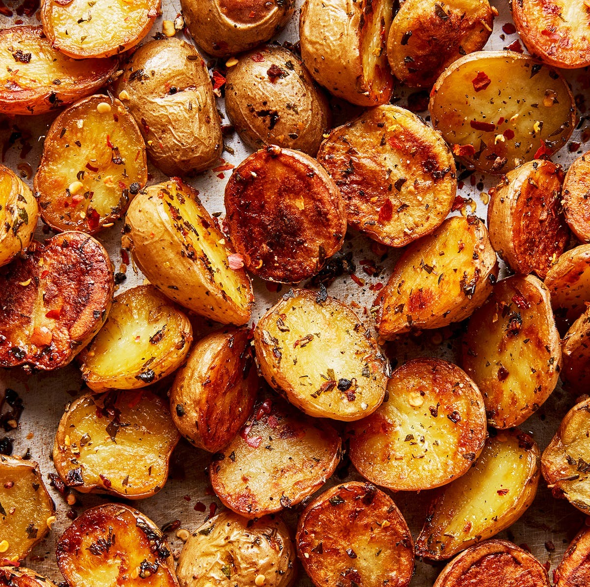

Roast Potatoes

Description
Roast potatoes are a classic side dish that’s easy to make and always a hit. Crispy on the outside, fluffy on the inside, they’re the perfect complement to any meal.
With just a few simple ingredients and a bit of time in the oven, you’ll have golden, perfectly seasoned potatoes that everyone will love. Simple, delicious, and always satisfying.
Ingredients
- 1 kg/ 2 lb baby potatoes
- 4 tbsp extra virgin olive oil
- 1 tsp salt
- 1/4 tsp black pepper
Steps
- Preheat oven to 200°C / 400°F.
- Cut potatoes into chunks and toss with olive oil, salt, pepper, and any desired herbs.
- Spread them on a baking sheet in a single layer.
- Roast for 25-30 minutes, turning halfway, until golden and crispy.
- Serve hot and enjoy!